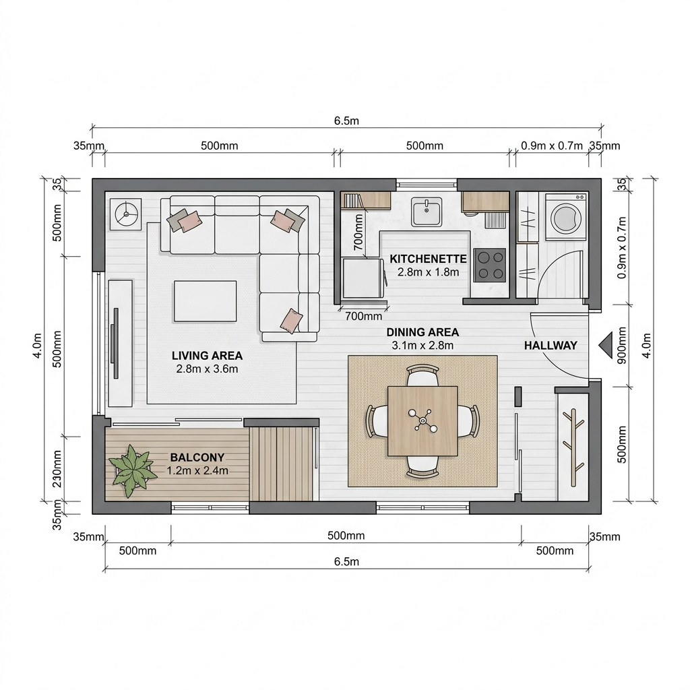
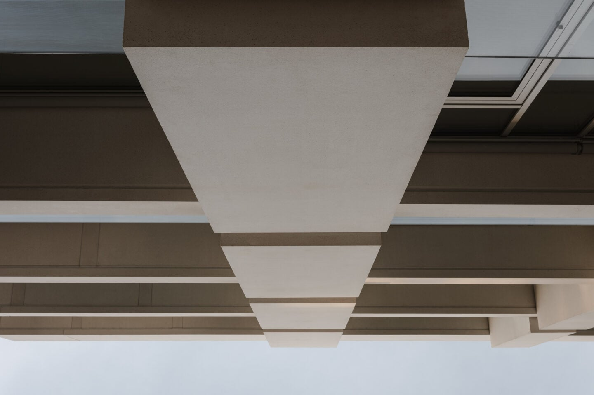
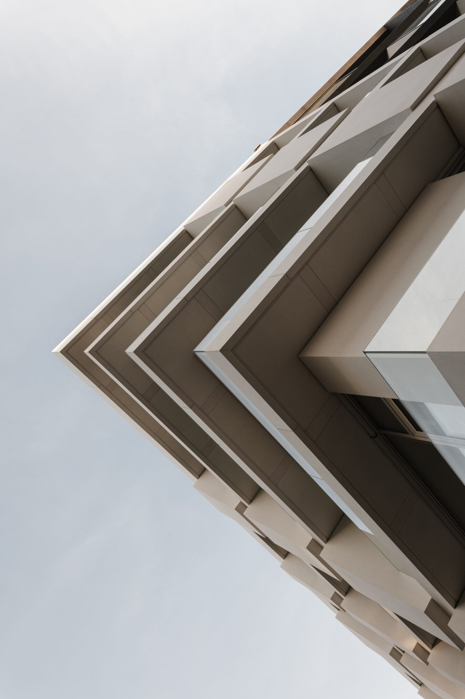

A virtual design study for a 1920s west-side apartment with neutral but bold base tones, vintage flair, and living and dining spaces designed as separate but twinned retreats.
Using our digital studio process, we developed comprehensive moodboards, spatial planning, and realistic 3D renderings to guide the client's execution.

